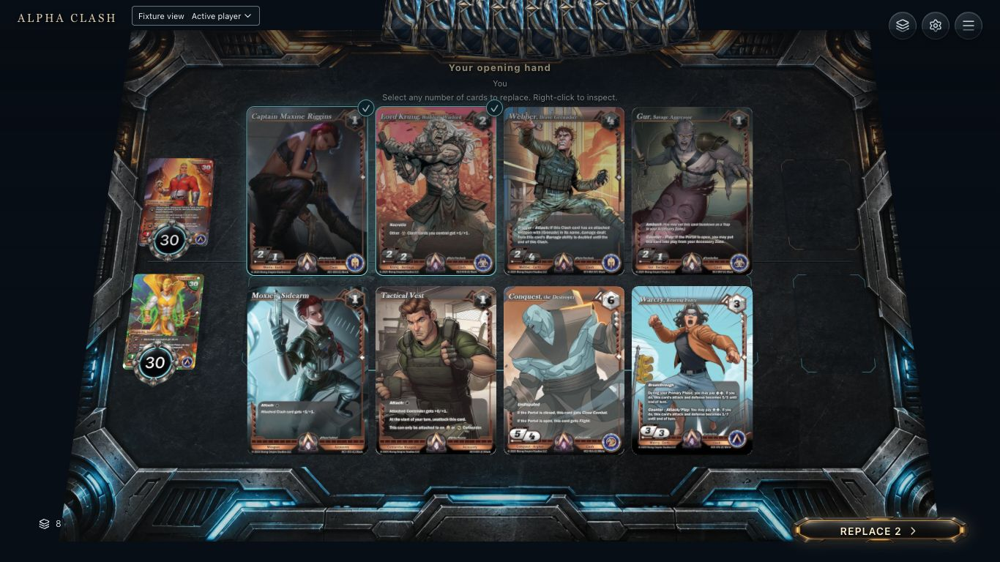
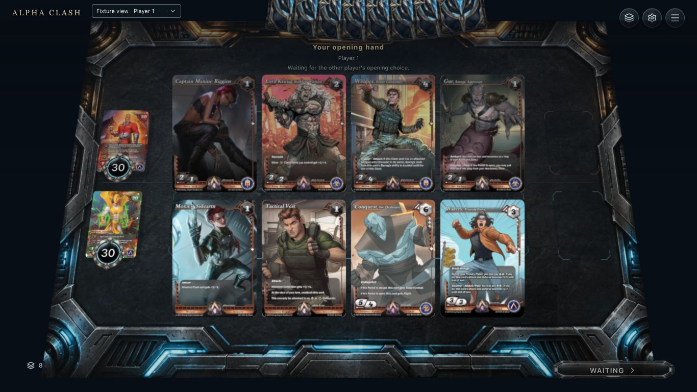
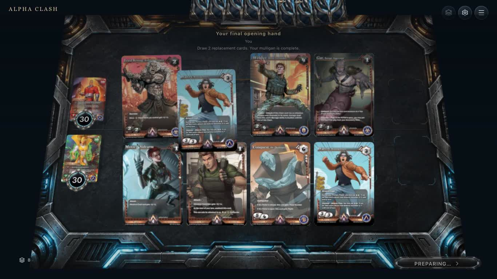
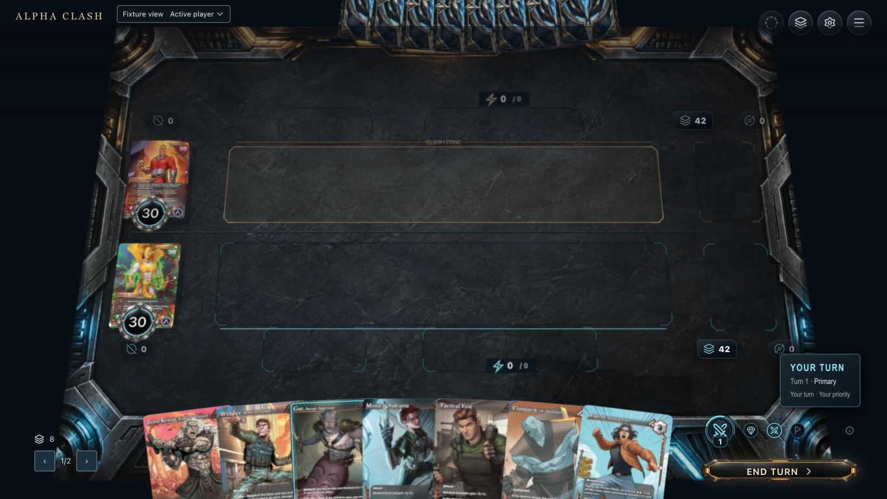
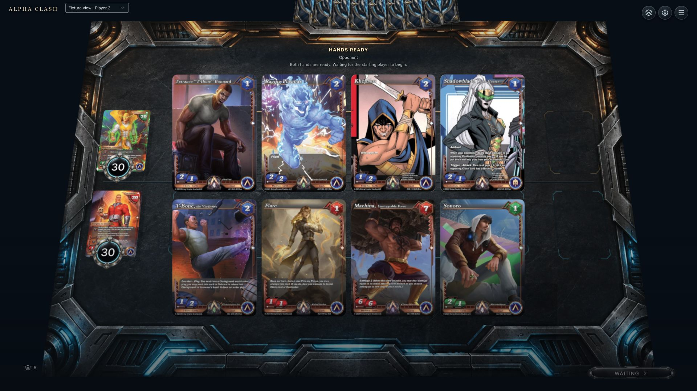
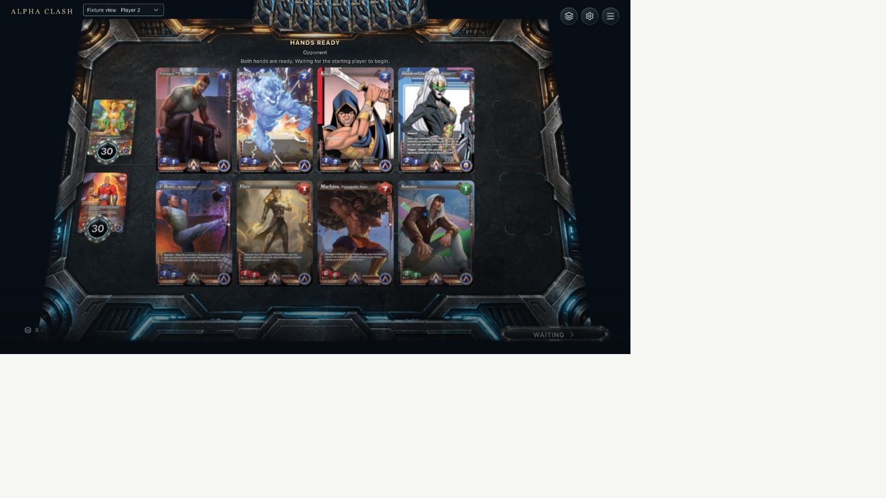
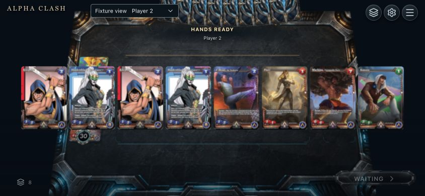
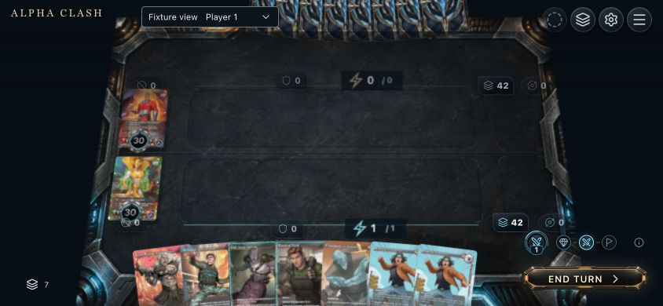
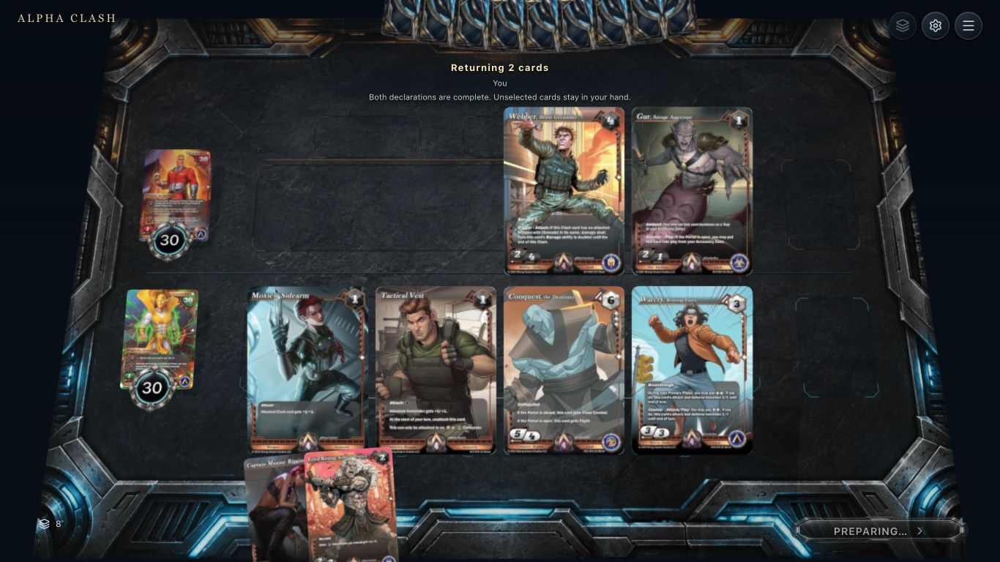
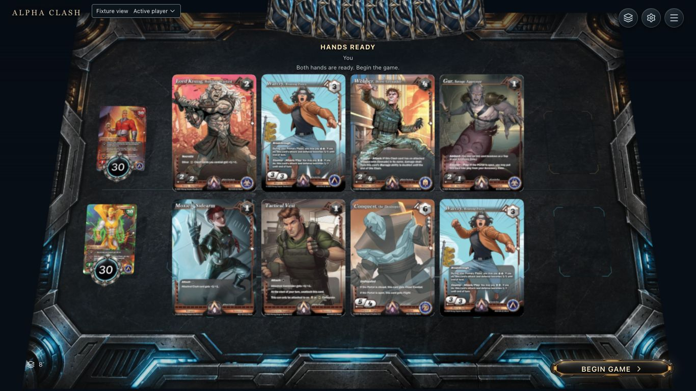

Fresh native initializer and board submissions. Mixed reset runs and recording frames are labelled. Confirmation submits before presentation. Pending private selections do not animate card transfers.
Normal recording 5.7 s, native actor selection stage. Eight real faces, no selection. Native declaration has already happened; this is not the initial deal.
2
2. Focus / selection feedback
Normal 6.4 s frame. Captain Maxine has a visible outline and selection mark. Replace2 reflects the draft; no cards have moved.

3
3. Selected
Two-card native draft before Enter Replace2. Source names and exact instances come from the owner projection. Selection remains editable.

4
4. Pending / other selection
Separate hot-seat run. First accepted selection is locked, but the exact original eight-card hand stays stationary until the other seat completes. No false return/shuffle.

5
5. Resolving / accepted deal
Normal 7.2 s frame after the native final selection has resolved. Incoming replacement motion is visible. Outgoing return/shuffle snapshots remain missing.

6
6. Completed
Same normal recording, native turn-one Primary after Begin game and Skip resource. Both hands eight, decks42 and health30. This is not a predicted final board.
Paired native recordings
Both include Begin opening, a two-card replacement against a keeping bot, Start game and Skip resource. The normal output has app audio; mute/reduced is digital silence. Perceptual sound timing and renderer performance remain open.
Normal and app audioMuted and reduced motion
Readiness across viewports
Separate native runs. Keep at desktop/laptop; both-replace at landscape. These do not certify every opening branch at each size.

Waiting seat, 1920

Waiting seat,1366

HANDS READY at844

Native resource deployed at844
Later accepted outgoing snapshot
Fresh1366 native final-player replacement now preserves its own old hand for return/shuffle after successful acceptance. Six retained cards remain. Final native projection resumes for redraw. Both-player deferred batches and updated audio clips remain open.

Accepted Return: outgoing original cards, not replacement identities.

Current native hand after redraw; snapshot released.